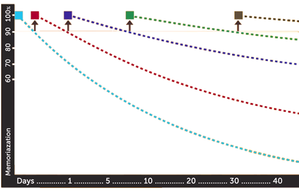
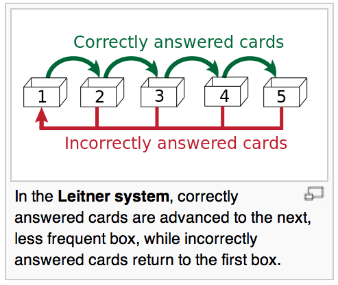

Ergosphere
Final Presentation
When you're a lifelong learner,
knowledge never stands still.
If you wish to make an [app] from scratch, you must first invent the [ergosphere]
- What do we want students to do more of? Study.
- What do study apps do well?
- some utilize only learning algorithms
- some are merely just flash cards
- most are limited to a specific topic
- not all of them are fun
What does it do?
- Uses learning strategies to optimize knowledge retention
- Integrates with wearable, 24 hour live syncing technology
- Shows off flat UI space-inspired design
Strengthening the Student Toolbox.
- Distributed Practice - learning over time
- Spaced Repetition Learning
- review too early, you waste time
- review too late, you forget it
- Fight the "Forgetting Curve"
- Interleaved Practice - mixing it up
Leitner System
- Incorrectly answered items move up boxes
- Receive higher priority and more frequent studing
- Correctly answered items move back boxes
- Receive lower priority and less frequent studying
It knows you when you're sleeping.
It knows when you're awake.

Jawbone UP 24 provides user activity data that is synchronized in realtime to an iOS device using Bluetooth.
Public API allows access to various data such as: body, workouts, goals, mood, moves, etc
Don't waste energy remembering to study.
Let us do that for you.
- Live tracking / syncing of stats
- Push notifications - when idle
- Log study sessions and track personal goals
If we build, they will learn.

- Database - iOS Core Data
- Efficient use of resources
- Accurate motion tracking data using MotionX Technology
- The UP Platform - Jawbone API
- Facetoaster